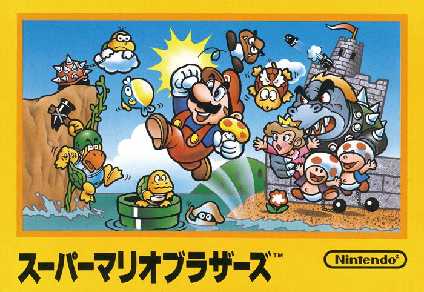
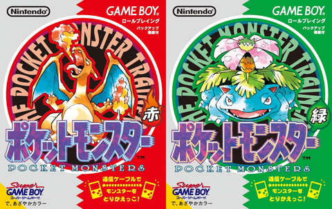

somewhere along the way, japan decided that everything deserves a face. a city, a bank, a train line, a fruit. astro boy’s manga began in 1952, hello kitty arrived in 1974 with no mouth and still says everything, pac-man and mario turned code into personalities, emoji put little faces in every phone. today, as ai products start to take on faces, voices and characters of their own, it’s worth looking at the place where this idea became a culture and an industry. how it grew, how japan turned it into a global export, and what that story might tell us about the characters we are building now
famicom, 1985

game boy, 1996
